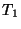
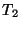
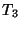
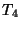

The Tensor Contraction Engine (TCE) Module of NWChem implements a variety of approximations that converge at the exact solutions of Schrödinger equation. They include configuration interaction theory through singles, doubles, triples, and quadruples substitutions, coupled-cluster theory through connected singles, doubles, triples, and quadruples substitutions, and many-body perturbation theory through fourth order in its tensor formulation. Not only optimized parallel programs of some of these high-end correlation theories are new, but also the way in which they have been developed is unique. The working equations of all of these methods have been derived completely automatically by a symbolic manipulation program called a Tensor Contraction Engine (TCE), and the optimized parallel programs have also been computer-generated by the same program, which were interfaced to NWChem. The development of the TCE program and this portion of the NWChem program has been financially supported by the United States Department of Energy, Office of Science, Office of Basic Energy Science, through the SciDAC program.
The capabilities of the module include:
setenv CCSDTQ yes and recompile TCE module.
The following optimizations have been used in the module:
This extensible module is designed such that an existing or new model of many-electron theory can be added and further optimization can be incorporated with ease by virtue of the TCE. This module is still being actively enhanced by the TCE and we hope to include more models and optimizations in future releases!
For reviews or tutorials of these highly-accurate correlation methods, the user is referred to:
For algorithms and applications of TCE, see:
The TCE thoroughly analyzes the working equation of many-electron theory models and automatically generates a program that takes full advantage of these symmetries at the same time. To do so, the TCE first recognizes the index permutation symmetries among the working equations, and perform strength reduction and factorization by carefully monitoring the index permutation symmetries of intermediate tensors. Accordingly, every input and output tensor (such as integrals, excitation amplitudes, residuals) has just two independent but strictly ordered index strings, and each intermediate tensor has just four independent but strictly ordered index strings. The operation cost and storage size of tensor contraction is minimized by using the index range restriction arising from these index permutation symmetries and also spin and spatial symmetry integration.
To maintain the peak local memory usage at a manageable level, in the beginning of the calculation, the orbitals are rearranged into tiles (blocks) that contains orbitals with the same spin and spatial symmetries. So the tensor contractions in these methods are carried out at the tile level; the spin, spatial, and index permutation symmetry is employed to reduce the operation and storage cost at the tile level also.
In a parallel execution, dynamic load balancing of tile-level local tensor index sorting and local tensor contraction (matrix multiplication) will be invoked.
Each process is assigned a local tensor index sorting and tensor contraction dynamically. It must first retrieve the tiles of input tensors, and perform these local operations, and accumulate the output tensors to the storage. We have developed a uniform interface for these I/O operations to either (1) a global file on a global file system, (2) a global memory on a global or distributed memory system, and (3) semi-replicated files on a distributed file systems. Some of these operations depend on the ParSoft library.
The keyword to invoke the many-electron theories in the module is
TCE. To perform a single-point energy calculation, include
TASK TCE ENERGY
in the input file, which may be preceeded by the TCE input block
that details the calculations:
TCE
[(DFT||HF||SCF) default HF=SCF]
[FREEZE [[core] (atomic || <integer nfzc default 0>)] \
[virtual <integer nfzv default 0>]]
[(LCCD||CCD||CCSD||LCCSD||CCSDT||CCSDTQ|| \
CCSD(T)||CCSD[T]||QCISD||CISD||CISDT||CISDTQ|| \
MBPT2||MBPT3||MBPT4||MP2||MP3||MP4) default CCSD]
[THRESH <double thresh default 1e-6>]
[MAXITER <integer maxiter default 100>]
[PRINT (none||low||medium||high||debug)
<string list_of_names ...>]
[IO (fortran||eaf||ga||sf||replicated||dra||ga_eaf) default ga]
[DIIS <integer diis default 5>]
[NROOTS <integer nroots default 0>]
[TARGET <integer target default 1>]
[TARGETSYM <character targetsym default 'none'>]
[SYMMETRY]
[DIPOLE]
[TILESIZE <no default (automatically adjusted)>]
[(NO)FOCK <logical recompf default .true.>]
[FRAGMENT <default -1 (off)>]
END
Also supported are energy gradient calculation, geometry optimization,
and vibrational frequency (or hessian) calculation, on the basis of
numerical differentiation. To perform these calculations, use
TASK TCE GRADIENT
or
TASK TCE OPTIMIZE
or
TASK TCE FREQUENCIES
Alternatively, more descriptive keywords for each individual method can be used. For instance, to perform a CCSDT energy, gradient, etc. calculation, use
TASK UCCSDT ENERGY
or
TASK UCCSDT GRADIENT
or
TASK UCCSDT OPTIMIZE
or
TASK UCCSDT FREQUENCIES
with an (optional) input block enclosed either by UCCSDT and END or
by UCC and END. The keywords for individual methods of TCE module
always start with letter U which stands for ``unrestricted'' to avoid
confusion with other related methods (such as spin-restricted CCSD and various
canonical MP2 implementation) already in place in NWChem.
(UCCSDT||UCC)
[(DFT||HF||SCF) default HF=SCF]
[FREEZE [[core] (atomic || <integer nfzc default 0>)] \
[virtual <integer nfzv default 0>]]
[THRESH <double thresh default 1e-6>]
[MAXITER <integer maxiter default 100>]
[PRINT (none||low||medium||high||debug)]
<string list_of_names ...>]
[IO (fortran||eaf||ga||sf||replicated||dra||ga_eaf) default ga]
[DIIS <integer diis default 5>]
[NROOTS <integer nroots default 0>]
[TARGET <integer target default 1>]
[TARGETSYM <character targetsym default 'none'>]
[SYMMETRY]
[DIPOLE]
[TILESIZE <no default (automatically adjusted)>]
[(NO)FOCK <logical recompf default .true.>]
[FRAGMENT <default -1 (off)>]
END
When a method (CCSDT in this example) is specified in the task directive,
a duplicate method specification
is not necessary (indeed not allowed) in the corresponding (UCCSDT or UCC in this case)
input block. The keywords of the other methods for task directive are:
TASK (UCCD||ULCCD||UCCSD||ULCCSD||UQCISD||UCCSDT||UCCSDTQ) ENERGY
or
TASK (UCISD||UCISDT||UCISDTQ) ENERGY
or
TASK (UMP2||UMP3||UMP4||UMBPT2||UMBPT3||UMBPT4) ENERGY
etc. The input block can be specified by the same name (UCISDT and END
block for TASK UCISDT ENERGY) or UCC for the CC family, UCI for
the CI family, and UMP or UMBPT for the MP family of methods.
The user may also specify the parameters of reference wave function calculation in a separate block for either HF (SCF) or DFT, depending on the first keyword in the above syntax.
Since each keyword has a default value, a minimal input file will be
GEOMETRY Be 0.0 0.0 0.0 END BASIS Be library cc-pVDZ END TASK TCE ENERGYwhich performs a CCSD/cc-pVDZ calculation of the Be atom in its singlet ground state with a spin-restricted HF reference.
This keyword tells the module
which of the HF (SCF) or DFT module is going to be used for the calculation
of a reference wave function. The keyword HF and SCF are
one and the same keyword internally, and are default. When these are used,
the details of the HF (SCF) calculation can be specified in the SCF input
block, whereas if DFT is chosen, DFT input block may be provided.
For instance, RHF-RCCSDT calculation (R standing for spin-restricted) can be performed with the following input blocks:
SCF SINGLET RHF END TCE SCF CCSDT END TASK TCE ENERGYor
SCF SINGLET RHF END UCCSDT SCF END TASK UCCSDT ENERGYor
SCF SINGLET RHF END UCC SCF END TASK UCCSDT ENERGYThis calculation (and any correlation calculation in the TCE module using a RHF or RDFT reference for a closed-shell system) skips the storage and computation of all
SCF DOUBLET ROHF END TCE SCF CCSDT END TASK TCE ENERGYand likewise, UHF-UCCSDT for an open-shell doublet system can be specified with
SCF DOUBLET UHF END TCE SCF CCSDT END TASK TCE ENERGYThe operation and storage costs of the last two calculations are identical. To use the KS DFT reference wave function for a UCCSD calculation of an open-shell doublet system,
DFT ODFT MULT 2 END TCE DFT CCSD END TASK TCE ENERGYNote that the default model of the DFT module is LDA.
These keywords stand for the following models:
All of these models are based on spin-orbital expressions of the amplitude and energy equations,
and designed primarily for spin-unrestricted reference wave functions. However, for a restricted
reference wave function of a closed-shell system, some further reduction of operation and storage
cost will be made. Within the unrestricted framework, all these methods take full advantage
of spin, spatial, and index permutation symmetries to save operation and storage costs at every
stage of the calculation. Consequently, these computer-generated programs will perform significantly
faster than, for instance, a hand-written spin-adapted CCSD program in NWChem, although the nominal
operation cost for a spin-adapted CCSD is just one half of that for spin-unrestricted CCSD (in spin-unrestricted
CCSD there are three independent sets of excitation amplitudes, whereas in spin-adapted CCSD there
is only one set, so the nominal operation cost for the latter is one third of that of the former. For
a restricted reference wave function of a closed-shell system, all  spin block of the excitation
amplitudes and integrals can be trivially mapped to the all
spin block of the excitation
amplitudes and integrals can be trivially mapped to the all  spin block, reducing the ratio
to one half).
spin block, reducing the ratio
to one half).
While the MBPT (MP) models implemented in the TCE module give identical correlation energies as conventional implementation for a canonical HF reference of a closed-shell system, the former are intrinsically more general and theoretically robust for other less standard reference wave functions and open-shell systems. This is because the zeroth order of Hamiltonian is chosen to be the full Fock operatior (not just the diagonal part), and no further approximation was invoked. So unlike the conventional implementation where the Fock matrix is assumed to be diagonal and a correlation energy is evaluated in a single analytical formula that involves orbital energies (or diagonal Fock matrix elements), the present tensor MBPT requires the iterative solution of amplitude equations and subsequent energy evaluation and is generally more expensive than the former. For example, the operation cost of many conventional implementation of MBPT(2) scales as the fourth power of the system size, but the cost of the present tensor MBPT(2) scales as the fifth power of the system size, as the latter permits non-canonical HF reference and the former does not (to reinstate the non-canonical HF reference in the former makes it also scale as the fifth power of the system size).
This keyword specifies the convergence threshold of iterative solutions of amplitude equations,
and applies to all of the CI, CC, and MBPT models.
The threshold refers to the norm of residual,
namely, the deviation from the amplitude equations.
The default value is 1e-6.
It sets the maximum allowed number iterations for the iterative solutions of amplitude equations.
The default value is 100.
There are five parallel I/O schemes implemented for all the models, which need to be wisely chosen for a particular problem and computer architecture.
fortran : Fortran77 direct access,
eaf : Exclusive Access File library,
ga : Fully incore, Global Array virtual file,
sf : Shared File library,
replicated : Semi-replicated file on distributed file system with EAF library.
dra : Distributed file on distributed file system with DRA library.
ga_eaf : Semi-replicated file on distributed file system with EAF library. GA is used
to speedup the file reconciliation.
Two new I/O algorithms dra and ga_eaf combines GA and DRA or EAF based replicated
algorithm. In the former, arrays that are not active (e.g., prior  amplitudes used in DIIS
or EOM-CC trial vectors) in GA algorithm will be moved to DRA. In the latter, the intermediates
that are formed by tensor contractions are initially stored in GA, thereby avoiding the need to
accumulate the fragments of the intermediate scattered in EAFs in the original EAF algorithm.
Once the intermediate is formed completely, then it will be replicated as EAFs.
amplitudes used in DIIS
or EOM-CC trial vectors) in GA algorithm will be moved to DRA. In the latter, the intermediates
that are formed by tensor contractions are initially stored in GA, thereby avoiding the need to
accumulate the fragments of the intermediate scattered in EAFs in the original EAF algorithm.
Once the intermediate is formed completely, then it will be replicated as EAFs.
It sets the number iterations in which a DIIS extrapolation is performed to accelerate the convergence of excitation amplitudes. The default value is 5, which means in every five iteration, one DIIS extrapolation is performed (and in the rest of the iterations, Jacobi rotation is used). When zero or negative value is specified, the DIIS is turned off. It is not recommended to perform DIIS every iteration, whereas setting a large value for this parameter necessitates a large memory (disk) space to keep the excitation amplitudes of previous iterations.
Some of the lowest-lying core orbitals and/or some of the highest-lying virtual orbitals may be excluded in the calculations by this keyword (this does not affect the ground state HF or DFT calculation). No orbitals are frozen by default. To exclude the atom-like core regions altogether, one may request
FREEZE atomicTo specify the number of lowest-lying occupied orbitals be excluded, one may use
FREEZE 10which causes 10 lowest-lying occupied orbitals excluded. This is equivalent to writing
FREEZE core 10To freeze the highest virtual orbitals, use the
virtual
keyword. For instance, to freeze the top 5 virtuals
FREEZE virtual 5
One can specify the number of excited state roots to be determined. The default
value is 1. It is advised that the users request several more roots than actually
needed, since owing to the nature of the trial vector algorithm, some low-lying
roots can be missed when they do not have sufficient overlap with the initial guess
vectors.
At the moment, the first and second geometrical derivatives of excitation
energies that are needed in force, geometry, and frequency calculations are
obtained by numerical differentiation. These keywords may be used to specify
which excited state root is being used for the geometrical derivative calculation.
For instance, when TARGET 3 and TARGETSYM a1g are included in the
input block, the total energy (ground state energy plus excitation energy)
of the third lowest excited state root (excluding the ground state) transforming as
the irreducible representation a1g will be passed to the module which performs
the derivative calculations. The default values of these keywords are 1 and none,
respectively.
The keyword TARGETSYM is essential in excited state geometry
optimization, since it is very common that the order of excited states changes due to
the geometry changes in the course of optimization. Without specifying the TARGETSYM,
the optimizer could (and would likely) be optimizing the geometry of an excited state that
is different from the one the user had intended to optimize at the starting geometry.
On the other hand, in the frequency calculations, TARGETSYM must be none,
since the finite displacements given in the course of frequency calculations will lift
the spatial symmetry of the equilibrium geometry. When these finite displacements can
alter the order of excited states including the target state, the frequency calculation
is not be feasible.
By adding this keyword to the input block, the user can request the module to
seek just the roots of the specified irreducible representation as
TARGETSYM. By default, this option is not set.
TARGETSYM must be specified when SYMMETRY is invoked.
When this is set, the ground-state CC calculation will enter another round of iterative step for the so-called equation to obtain the one-particle density matrix and dipole moments. Likewise, for excited-states (EOM-CC), the transition moments and dipole moments will be computed when (and only when) this option is set. In the latter case, EOM-CC left hand side solutions will be sought incurring approximately three times the computational cost of excitation energies alone (note that the EOM-CC effective Hamiltonian is not Hermitian and has distinct left and right eigenvectors).
The default is FOCK meaning that the Fock matrix will
be reconstructed (as opposed to using the orbital energies as the diagonal part of
Fock). This is essential in getting correct correlation energies with ROHF or DFT
reference wave functions. However, currently, this module cannot reconstruct the
Fock matrix when one-component relativistic effects are operative. So when a user
wishes to run TCE's correlation methods with DK or other relativistic reference,
NOFOCK must be set and orbital energies must be used for the Fock matrix.
This keyword changes the level of output verbosity. One may also request some particular items in Table 15.1 printed.
| Item | Print Level | Description |
| ``time'' | vary | CPU and wall times |
| ``tile'' | vary | Orbital range tiling information |
| ``t1'' | debug |  excitation amplitude dumping |
| ``t2'' | debug |  excitation amplitude dumping |
| ``t3'' | debug |  excitation amplitude dumping |
| ``t4'' | debug |  excitation amplitude dumping |
| ``general information'' | default | General information |
| ``correlation information'' | default | TCE information |
| ``mbpt2'' | debug | Caonical HF MBPT2 test |
| ``get_block'' | debug | I/O information |
| ``put_block'' | debug | I/O information |
| ``add_block'' | debug | I/O information |
| ``files'' | debug | File information |
| ``offset'' | debug | File offset information |
| ``ao1e'' | debug | AO one-electron integral evaluation |
| ``ao2e'' | debug | AO two-electron integral evaluation |
| ``mo1e'' | debug | One-electron integral transformation |
| ``mo2e'' | debug | Two-electron integral transformation |
The following is a sample input for a ROHF-UCCSD energy calculation of a water radical cation.
START h2o TITLE "ROHF-UCCSD/cc-pVTZ H2O" CHARGE 1 GEOMETRY O 0.00000000 0.00000000 0.12982363 H 0.75933475 0.00000000 -0.46621158 H -0.75933475 0.00000000 -0.46621158 END BASIS * library cc-pVTZ END SCF ROHF DOUBLET THRESH 1.0e-10 TOL2E 1.0e-10 END TCE CCSD END TASK TCE ENERGYThe same result can be obtained by the following input:
START h2o TITLE "ROHF-UCCSD/cc-pVTZ H2O" CHARGE 1 GEOMETRY O 0.00000000 0.00000000 0.12982363 H 0.75933475 0.00000000 -0.46621158 H -0.75933475 0.00000000 -0.46621158 END BASIS * library cc-pVTZ END SCF ROHF DOUBLET THRESH 1.0e-10 TOL2E 1.0e-10 END TASK UCCSD ENERGY
EOM-CCSDT calculation for excitation energies, excited-state dipole, and transition moments.
START tce_h2o_eomcc GEOMETRY UNITS BOHR H 1.474611052297904 0.000000000000000 0.863401706825835 O 0.000000000000000 0.000000000000000 -0.215850436155089 H -1.474611052297904 0.000000000000000 0.863401706825835 END BASIS * library sto-3g END SCF SINGLET RHF END TCE CCSDT DIPOLE FREEZE CORE ATOMIC NROOTS 1 END TASK TCE ENERGY